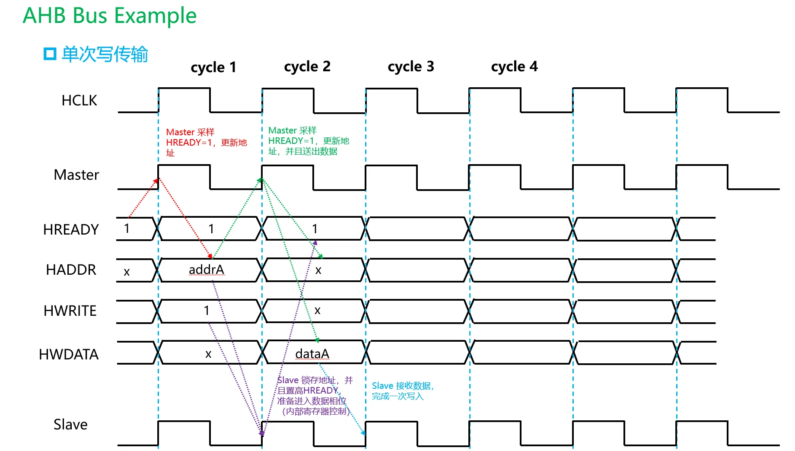
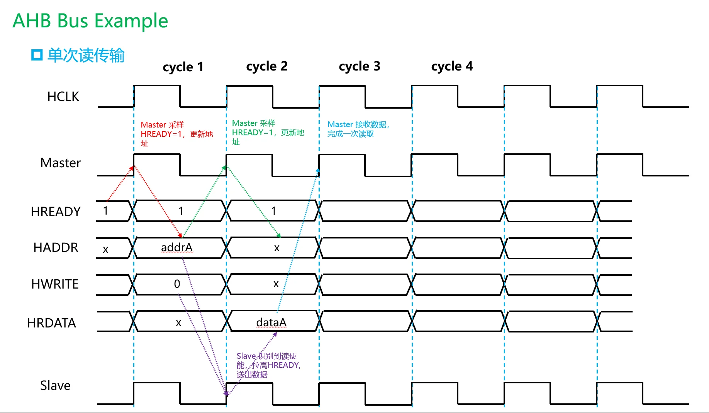
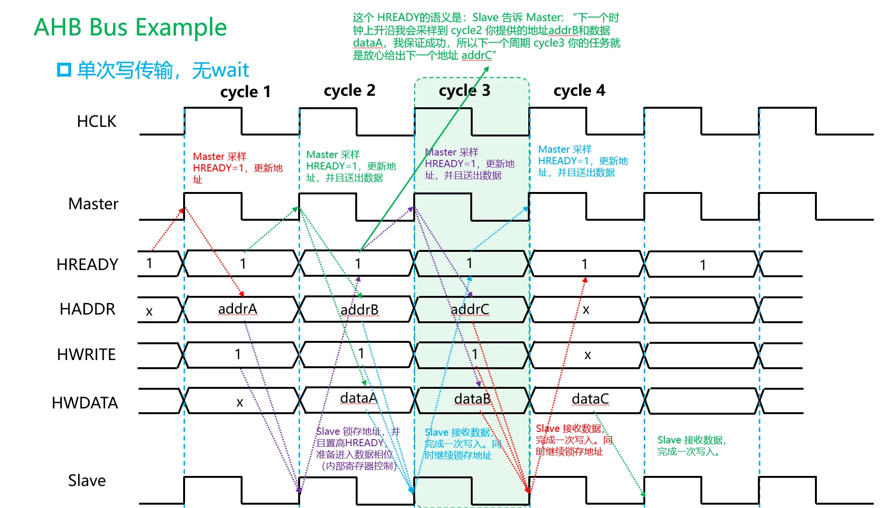
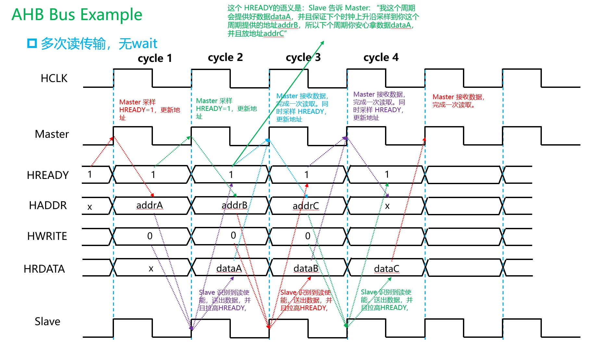
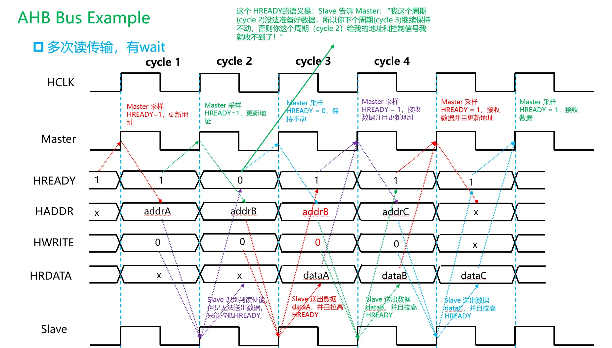
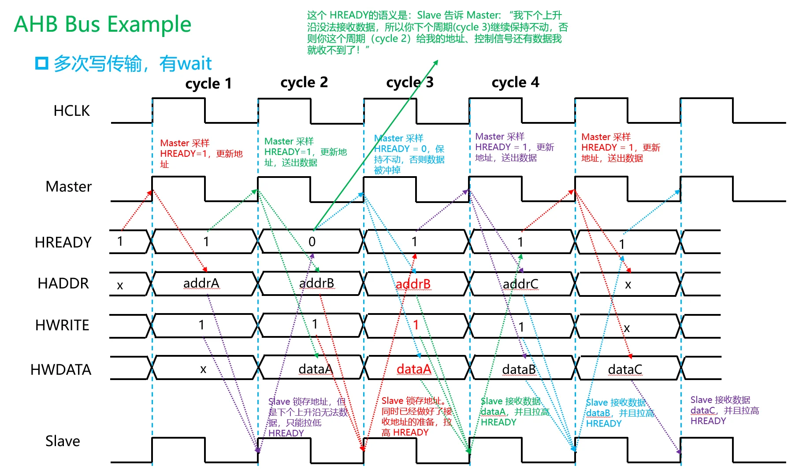

AHB 协议基础¶
下面主要讲 AMBA AHB / AHB-Lite 的基本行为。课程里通常重点学的是 AHB-Lite：一个 master、多个 slave，通过地址译码选择 slave，不涉及复杂多 master 仲裁。完整 AHB 比 AHB-Lite 多了仲裁、bus request、grant、split/retry 等机制，但基本传输时序、地址/数据流水、HREADY 控制方式是一致的。
你可以先把 AHB 理解成一句话：
AHB 是一种地址阶段和数据阶段流水重叠的片上总线。当前周期发地址，下一个周期传这个地址对应的数据。
这是 AHB 最核心的理解点。
1. AHB 的基本定位¶
在 AMBA 协议族中：
AHB 常见用途包括：
它比 APB 高级，因为它支持流水、burst、wait state；
它比 AXI 简单，因为它没有 AXI 那种五个独立通道。
2. AHB 最核心的结构：地址阶段 + 数据阶段¶
AHB 的一次传输可以拆成两个阶段：
在地址阶段，master 给出：
在数据阶段，根据读写方向传输：
重点是：
AHB 的地址阶段和数据阶段是错开一个周期的。
也就是：
这就是 AHB 的流水特征。
3. 最小例子：连续写两个地址¶
假设 master 要写：
理想情况下没有 wait state，时序可以理解为：
展开成信号：
Cycle 1:
HADDR = 0x1000
HWRITE = 1
HTRANS = NONSEQ
HWDATA = 无意义，因为还没有上一笔写数据阶段
Cycle 2:
HADDR = 0x1004
HWRITE = 1
HTRANS = SEQ 或 NONSEQ，取决于是否属于 burst
HWDATA = D0，对应上一周期的 0x1000
Cycle 3:
HADDR = 无新传输
HTRANS = IDLE
HWDATA = D1，对应上一周期的 0x1004
最容易错的地方就是：
HADDR 和 HWDATA 不是同一周期对应的。
在 AHB 写事务中：
4. AHB 的主要信号总览¶
下面先整体列出常见信号。以 AHB-Lite 为主。
4.1 全局信号¶
| 信号 | 方向 | 含义 |
|---|---|---|
HCLK |
clock | 总线时钟 |
HRESETn |
reset | 低有效复位 |
4.2 Master 发出的地址和控制信号¶
| 信号 | 方向 | 含义 |
|---|---|---|
HADDR |
Master → Slave | 地址 |
HTRANS |
Master → Slave | 当前传输类型 |
HWRITE |
Master → Slave | 1 表示写，0 表示读 |
HSIZE |
Master → Slave | 每次传输的数据大小 |
HBURST |
Master → Slave | burst 类型 |
HPROT |
Master → Slave | 保护属性，例如指令/数据、特权/用户等 |
HMASTLOCK |
Master → Slave | locked transfer，简单学习可先了解即可 |
HWDATA |
Master → Slave | 写数据，属于数据阶段 |
4.3 Slave 返回的信号¶
| 信号 | 方向 | 含义 |
|---|---|---|
HRDATA |
Slave → Master | 读数据，属于数据阶段 |
HREADYOUT |
Slave → Interconnect/Master | 当前 slave 是否完成数据阶段 |
HRESP |
Slave → Master | 响应状态，通常 OKAY 或 ERROR |
4.4 互联/译码相关信号¶
| 信号 | 含义 |
|---|---|
HSELx |
某个 slave 是否被地址译码选中 |
HREADY |
全局 ready，表示上一数据阶段是否完成，总线能否推进 |
注意：
在简单 AHB-Lite 系统里，经常可以近似理解为：
但严格来说，它通常由 interconnect/mux 根据当前数据阶段对应的 slave 选择出来。
5. HREADY 是 AHB 里最关键的控制信号¶
AXI 用 VALID/READY 每个通道独立握手；
AHB 没有每个通道的 valid-ready 握手，而是主要靠：
你可以把 HREADY 理解为：
HREADY = 1：当前数据阶段完成，总线可以进入下一拍。
HREADY = 0：当前数据阶段还没完成，整个 AHB 流水线暂停。
这句话非常重要。
当 master 在某一个时钟上升沿发现：
时，master 必须保持地址和控制信号稳定，不能推进到下一笔传输。
也就是：
都要按照协议要求保持，直到 HREADY 回到 1。
6. AHB 和 AXI 握手最大的区别¶
AXI 是：
例如：
AHB 是：
所以 AHB 没有：
这种多通道握手。
AHB 的关键判断是：
7. HTRANS：当前地址阶段是什么类型？¶
HTRANS 是理解 AHB 的核心信号之一。
它通常是 2 bit：
常见编码：
| HTRANS | 名称 | 含义 |
|---|---|---|
2'b00 |
IDLE | 空闲，没有有效传输 |
2'b01 |
BUSY | burst 中插入忙周期，不进行有效数据传输 |
2'b10 |
NONSEQ | 非连续传输，新的单次传输或 burst 第一拍 |
2'b11 |
SEQ | 连续传输，burst 后续拍 |
最常用的是：
BUSY 相对少见，初学可以先理解为：
master 暂时不能提供下一拍 burst 地址，但又不想结束 burst，于是插入 BUSY。
7.1 IDLE¶
HTRANS = IDLE 表示当前地址阶段没有有效传输。
例如总线空闲：
slave 看到 HTRANS = IDLE，不应该启动新的访问。
7.2 NONSEQ¶
HTRANS = NONSEQ 表示：
它可以是：
例如一次普通写：
7.3 SEQ¶
HTRANS = SEQ 表示：
例如 4-beat burst：
地址通常根据 HSIZE 和 HBURST 递增。
7.4 BUSY¶
HTRANS = BUSY 表示：
BUSY 周期不对应有效传输，但允许 master 在 burst 中暂停一下。
课程基础阶段一般知道它存在即可，重点掌握 IDLE / NONSEQ / SEQ。
8. HWRITE：读还是写？¶
HWRITE 很简单：
它属于地址/控制阶段信号。
也就是说，某一周期的：
共同描述了一笔访问。
但是如果是写传输，对应的 HWDATA 在下一个数据阶段出现。
例如：
9. HSIZE：一次传输多大？¶
HSIZE 表示每个 beat 的数据大小。
常见编码：
| HSIZE | 传输大小 |
|---|---|
3'b000 |
1 byte |
3'b001 |
2 bytes，halfword |
3'b010 |
4 bytes，word |
3'b011 |
8 bytes |
3'b100 |
16 bytes |
| ... | ... |
例如 32-bit AHB 数据总线中：
表示一次传输 4 bytes，也就是 32 bit。
如果地址是：
那么访问的是：
如果是 burst increment，下一拍地址一般是：
10. HBURST：burst 类型¶
HBURST 表示 burst 的类型和长度。
常见取值：
| HBURST | 名称 | 含义 |
|---|---|---|
000 |
SINGLE | 单次传输 |
001 |
INCR | 未指定长度递增 burst |
010 |
WRAP4 | 4-beat wrapping burst |
011 |
INCR4 | 4-beat increment burst |
100 |
WRAP8 | 8-beat wrapping burst |
101 |
INCR8 | 8-beat increment burst |
110 |
WRAP16 | 16-beat wrapping burst |
111 |
INCR16 | 16-beat increment burst |
初学重点掌握：
以及理解：
大多数基础例子会用 SINGLE 或 INCR4。
11. HADDR：地址什么时候有效？¶
HADDR 在地址阶段有效。
但是只有当：
时，这个地址阶段才真正被接受并推进。
更准确地说：
当某个周期结束时，如果
HREADY = 1，当前地址阶段可以进入下一周期的数据阶段。
如果：
当前地址阶段不能被推进，master 必须保持 HADDR 和控制信号不变。
12. HWDATA：写数据什么时候有效？¶
这是 AHB 初学最容易错的地方。
HWDATA 属于数据阶段。
对于写传输：
例子：
如果 Cycle 2 的 HREADY = 1，那么写数据在 Cycle 2 完成。
如果 Cycle 2 的 HREADY = 0，说明 slave 没有接收完成，master 必须继续保持 HWDATA，直到 HREADY = 1。
13. HRDATA：读数据什么时候有效？¶
HRDATA 也属于数据阶段。
对于读传输：
例子：
如果 Cycle 2 的 HREADY = 1，master 在 Cycle 2 结束时采样 HRDATA。
如果 Cycle 2 的 HREADY = 0，说明读数据还没准备好，master 不能采样最终数据；slave 可以继续等待，直到某周期 HREADY = 1 时给出有效 HRDATA。
14. HREADY：流水线推进开关¶
你可以用这个公式记忆：
它同时影响：
这就是为什么 AHB 的 HREADY 很关键。
15. HRESP：响应状态¶
AHB-Lite 中常见 HRESP 可以简单理解为：
| HRESP | 含义 |
|---|---|
| OKAY | 正常完成 |
| ERROR | 错误响应 |
完整 AHB 中还有 RETRY、SPLIT 等，AHB-Lite 简化后主要关注 OKAY 和 ERROR。
对于课程基础阶段，重点知道：
一般传输正常时：
16. HSEL：slave 选择信号¶
AHB 系统一般有多个 slave。
例如：
地址译码器根据 HADDR 产生：
例如：
则：
注意：
也就是说，当前周期选中哪个 slave，是由当前地址阶段决定的；
但下一周期的数据阶段，需要由对应的 slave 返回 HRDATA/HREADYOUT/HRESP。
所以 AHB interconnect 内部通常要记住：
因为数据阶段返回数据的是上一拍选中的 slave。
17. 先建立一个最重要的周期模型¶
AHB 每个周期可以这样看：
例如：
所以每个周期都要同时问两个问题：
这个双层视角是理解 AHB 的关键。
18. 例子一：单次 AHB 写传输，无 wait state¶
假设：
信号变化：
Cycle: 1 2 3
HADDR: 0x1000 don't care don't care
HTRANS: NONSEQ IDLE IDLE
HWRITE: 1 x x
HSIZE: word x x
HBURST: SINGLE x x
HWDATA: x 0xAAAA_BBBB x
HREADY: 1 1 1
HRESP: OKAY OKAY OKAY
解释：
Cycle 1 是地址阶段：
表示 master 发起一次新的写传输。
Cycle 2 是数据阶段：
这个数据对应 Cycle 1 的地址 0x1000。
因为 Cycle 2：
所以写传输在 Cycle 2 完成。
见图：

19. 例子二：单次 AHB 读传输，无 wait state¶
假设：
时序：
Cycle: 1 2 3
HADDR: 0x2000 don't care don't care
HTRANS: NONSEQ IDLE IDLE
HWRITE: 0 x x
HSIZE: word x x
HBURST: SINGLE x x
HRDATA: x 0x1234_5678 x
HREADY: 1 1 1
HRESP: OKAY OKAY OKAY
解释：
Cycle 1：
Cycle 2：
master 在 Cycle 2 结束时采样读数据。

20. 单次读写中，HADDR 和数据的对应关系¶
写：
读：
所以你看到一张 AHB 波形图时，不要把同一拍的 HADDR 和 HWDATA/HRDATA 直接配对。
要向前看一拍。
21. 例子三：连续写传输，无 wait state¶
假设连续写：
如果作为普通连续单次传输，也可以每一拍都是 NONSEQ；
如果作为 burst，则第一拍 NONSEQ，后续 SEQ。
这里用 3-beat 递增 burst 思想说明：
对应信号：
Cycle: 1 2 3 4
HADDR: 0x1000 0x1004 0x1008 x
HTRANS: NONSEQ SEQ SEQ IDLE
HWRITE: 1 1 1 x
HSIZE: word word word x
HWDATA: x D0 D1 D2
HREADY: 1 1 1 1
解释：
Cycle 1 的地址 0x1000，对应 Cycle 2 的 D0
Cycle 2 的地址 0x1004，对应 Cycle 3 的 D1
Cycle 3 的地址 0x1008，对应 Cycle 4 的 D2
这就是 AHB 的流水优势：
从第二拍开始，每个周期都可以完成一笔数据传输。

¶22. 例子四：连续读传输，无 wait state¶
假设连续读：
时序：
Cycle: 1 2 3 4
HADDR: 0x2000 0x2004 0x2008 x
HTRANS: NONSEQ SEQ SEQ IDLE
HWRITE: 0 0 0 x
HRDATA: x R0 R1 R2
HREADY: 1 1 1 1
解释：

23. Wait state：slave 没准备好怎么办？¶
AHB 通过 HREADY = 0 插入 wait state。
但是理解 wait state 时，必须严格区分：
因此，HREADY = 0 的准确含义是：
也就是说，HREADY = 0 会冻结整个 AHB 流水线。
但是被冻结的地址不一定是上一笔地址，而是：
这是理解 AHB wait state 最容易出错的地方。
24. 连续读传输中插入 wait state 的正确例子¶
假设 master 连续读三个 word：
并且第一笔读 0x1000 的数据阶段需要额外等待一拍。
正确时序是：
Cycle: 1 2 3 4 5
HADDR: 0x1000 0x1004 0x1004 0x1008 don't care
HTRANS: NONSEQ SEQ SEQ SEQ IDLE
HWRITE: 0 0 0 0 x
HSIZE: word word word word x
HRDATA: x x DATA_A DATA_B DATA_C
HREADY: 1 0 1 1 1
HRESP: OKAY OKAY OKAY OKAY OKAY
对应关系是：
逐周期分析：
Cycle 1¶
表示 master 发起一笔新的读传输，地址为 0x1000。
因为 Cycle 1 结束时 HREADY = 1，所以 0x1000 这个地址阶段被接受。
Cycle 2¶
这一拍同时发生两件事：
但是 HREADY = 0，表示：
因此 Cycle 2 的 HRDATA 不能被当作有效读数据，Cycle 2 的 0x1004 也还没有真正进入数据阶段。
Cycle 3¶
这一拍仍然同时有两个阶段：
因此，在 Cycle 3 结束时：
所以：
Cycle 4¶
Cycle 4 的 HRDATA = DATA_B 对应的是 Cycle 3 被接受的地址 0x1004。
同时，Cycle 4 的地址阶段 0x1008 被接受。
所以：
Cycle 5¶
Cycle 5 的 HRDATA = DATA_C 对应的是 Cycle 4 被接受的地址 0x1008。
所以：
同时，当前已经没有新的有效地址阶段，所以 HTRANS = IDLE。
25. Wait state 对地址阶段的真正影响¶
无 wait state 时，连续读传输可以是：
含义：
A0 在 Cycle 1 被接受，R0 在 Cycle 2 完成；
A1 在 Cycle 2 被接受，R1 在 Cycle 3 完成；
A2 在 Cycle 3 被接受，R2 在 Cycle 4 完成。
如果 A0 的数据阶段在 Cycle 2 等待一拍，则时序变为：
关键结论：
Cycle 1: A0 被接受。
Cycle 2: A1 已经出现在地址总线上，但由于 HREADY=0，A1 未被接受。
Cycle 3: A1 继续保持；由于 HREADY=1，A1 才被接受。
Cycle 4: A2 被接受。
所以不是：
而是：
26. Wait state 对读数据的影响¶
对于读传输：
读数据阶段完成的条件是：
如果中间有 HREADY = 0，则当前 HRDATA 不能被 master 当成最终有效数据。
例如：
含义是：
master 应该在 Cycle 3 结束时采样：
27. Wait state 对写传输的影响¶
写传输同理。
假设连续写：
如果 A0 的数据阶段遇到一个 wait state，时序应为：
Cycle: 1 2 3 4 5
HADDR: A0 A1 A1 A2 x
HTRANS: NONSEQ SEQ SEQ SEQ IDLE
HWRITE: 1 1 1 1 x
HWDATA: x D0 D0 D1 D2
HREADY: 1 0 1 1 1
对应关系是：
逐周期解释：
Cycle 1¶
Cycle 2¶
Cycle 3¶
所以对于写传输，wait state 期间必须同时保持：
28. HREADY=0 时，到底保持什么？¶
当 HREADY = 0 时，master 必须保持当前地址阶段的地址和控制信号。
通常包括：
如果当前未完成的数据阶段是写传输，还必须保持：
但要注意这里的“当前地址阶段”指的是：
它不一定是上一笔已经进入数据阶段的地址。
因此，连续传输中常见模式是：
其中：
29. 为什么 Cycle 2 可以出现下一笔地址？¶
因为 AHB 是流水总线。
当 Cycle 1 的地址阶段 A0 被接受之后，Cycle 2 就可以进入：
所以在 Cycle 2 看到：
是完全正常的。
如果 Cycle 2 的 HREADY = 1，那么：
如果 Cycle 2 的 HREADY = 0，那么：
30. 用一句话重新理解 wait state¶
AHB wait state 的本质是：
数据阶段的 slave 没完成，于是整个流水线暂停；暂停期间，当前数据阶段保持，当前地址阶段也保持。
因此，对于下面这种情况：
正确理解是：
31. 读 burst + wait state 完整例子¶
假设一次 INCR4 读 burst：
读地址：
返回数据：
如果 R0 的数据阶段等待一拍：
Cycle: 1 2 3 4 5 6
HADDR: A0 A1 A1 A2 A3 x
HTRANS: NONSEQ SEQ SEQ SEQ SEQ IDLE
HWRITE: 0 0 0 0 0 x
HBURST: INCR4 INCR4 INCR4 INCR4 INCR4 x
HSIZE: word word word word word x
HRDATA: x x R0 R1 R2 R3
HREADY: 1 0 1 1 1 1
地址接受时刻：
数据完成时刻：

32. 写 burst + wait state 完整例子¶
假设一次 INCR4 写 burst：
如果 D0 的数据阶段等待一拍：
Cycle: 1 2 3 4 5 6
HADDR: A0 A1 A1 A2 A3 x
HTRANS: NONSEQ SEQ SEQ SEQ SEQ IDLE
HWRITE: 1 1 1 1 1 x
HBURST: INCR4 INCR4 INCR4 INCR4 INCR4 x
HSIZE: word word word word word x
HWDATA: x D0 D0 D1 D2 D3
HREADY: 1 0 1 1 1 1
对应关系：
注意 Cycle 2：
这不是矛盾，因为：

33. 如果不是 burst，而是连续 single transfer 怎么办？¶
如果不是 burst，而是多个独立的 single transfer，那么 HTRANS 通常可以是：
而不是：
例如连续 single 读，且第一笔数据阶段 wait 一拍：
Cycle: 1 2 3 4 5
HADDR: A0 A1 A1 A2 x
HTRANS: NONSEQ NONSEQ NONSEQ NONSEQ IDLE
HBURST: SINGLE SINGLE SINGLE SINGLE x
HWRITE: 0 0 0 0 x
HRDATA: x x R0 R1 R2
HREADY: 1 0 1 1 1
规则不变：
变化的是：
34. 单次读传输有 wait state 的正确写法¶
如果真的只有一笔孤立的单次读：
那么更合理的时序是：
Cycle: 1 2 3 4
HADDR: A0 x/held x/held x
HTRANS: NONSEQ IDLE IDLE IDLE
HWRITE: 0 x x x
HRDATA: x x R0 x
HREADY: 1 0 1 1
严格理解：
Cycle 1：A0 地址阶段被接受。
Cycle 2：A0 数据阶段等待；下一地址阶段是 IDLE，但是因为 HREADY=0，IDLE 这个地址阶段也被保持。
Cycle 3：A0 数据阶段完成，HRDATA=R0 有效。
这里 Cycle 2/3 的 HADDR 没有实际访问意义，因为 HTRANS = IDLE，表示没有新的有效传输。
所以不能写成：
那样会错误地暗示 A0 这个地址阶段还没有被接受。
35. 单次写传输有 wait state 的正确写法¶
如果只有一笔孤立的单次写：
slave 等待一拍：
Cycle: 1 2 3 4
HADDR: A0 x/held x/held x
HTRANS: NONSEQ IDLE IDLE IDLE
HWRITE: 1 x x x
HWDATA: x D0 D0 x
HREADY: 1 0 1 1
重点：
A0 在 Cycle 1 已经被接受；
D0 在 Cycle 2 开始作为数据阶段出现；
Cycle 2 HREADY=0，所以 D0 必须保持到 Cycle 3；
Cycle 3 HREADY=1，写完成。
如果 Cycle 2 总线上还有下一笔地址 A1，那就不是孤立单次传输，而是连续传输；此时 A1 会像前面的连续传输例子那样保持到 HREADY=1。
36. Slave 如何理解 AHB 信号？¶
一个 slave 看到 AHB 总线时，需要分清两个阶段。
地址阶段¶
当满足：
也就是概念上：
slave 才认为：
此时 slave 需要记录：
用于后续数据阶段。
数据阶段¶
后续数据阶段中：
然后通过：
告诉 master 当前数据阶段是否完成、是否出错。
37. 为什么 slave 要记录上一周期的控制信息？¶
因为数据阶段比地址阶段晚。
例如：
在 Cycle 2，HWDATA = D0 是写给 A0 的。
但此时总线上的 HADDR 已经变成 A1，甚至 HWRITE 也可能变成读。
所以 slave 必须在地址阶段被接受时记录：
否则到数据阶段就不知道 HWDATA/HRDATA 应该对应哪一笔访问。
用简化 Verilog 表达这个思想：
logic dphase_valid;
logic dphase_write;
logic [31:0] dphase_addr;
logic [2:0] dphase_size;
wire addr_phase_valid = HSEL && HTRANS[1] && HREADY;
always_ff @(posedge HCLK or negedge HRESETn) begin
if (!HRESETn) begin
dphase_valid <= 1'b0;
dphase_write <= 1'b0;
dphase_addr <= 32'b0;
dphase_size <= 3'b0;
end else if (HREADY) begin
dphase_valid <= HSEL && HTRANS[1];
dphase_write <= HWRITE;
dphase_addr <= HADDR;
dphase_size <= HSIZE;
end
end
这里最重要的是：
含义是：
如果 HREADY=0，这些寄存器保持不变，说明当前数据阶段还没有结束。
38. HTRANS[1] 为什么常被用来判断有效传输？¶
因为 HTRANS 常见编码为：
其中 HTRANS[1] = 1 对应：
也就是有效传输。
所以常见概念判断是：
意思是：
39. 写传输中，slave 什么时候采样 HWDATA？¶
对于一个被接受的写地址阶段：
如果没有 wait state：
如果有 wait state：
概念上可以写成：
如果从某个 slave 内部角度看，也常会关注该 slave 自己的：
但从总线行为角度，master/slave 观察到的数据阶段完成标志是全局 HREADY = 1。
40. 读传输中，master 什么时候采样 HRDATA？¶
对于读传输：
master 在以下条件满足的数据阶段采样 HRDATA：
概念条件：
如果 HREADY=0，说明读数据阶段还没完成，不能把当前 HRDATA 当成最终有效数据。
41. Error response 怎么理解？¶
如果访问非法地址、权限错误，或者 slave 内部出错，slave 可以返回：
基础学习阶段可以先记：
对于课程时序图，如果看到某个数据阶段：
就说明这笔传输在这个周期结束时以错误方式完成。
42. Burst 传输基本理解¶
AHB burst 是一组连续传输。
例如 4-beat increment burst：
那么地址为：
HTRANS 为：
如果中间没有 wait state，则每一拍地址都推进。
如果中间出现 HREADY=0，则当前地址阶段和当前数据阶段一起保持，burst 的后续地址不能继续前进。
43. 4-beat burst 写，无 wait state¶
假设：
时序：
Cycle: 1 2 3 4 5
HADDR: A0 A1 A2 A3 x
HTRANS: NONSEQ SEQ SEQ SEQ IDLE
HBURST: INCR4 INCR4 INCR4 INCR4 x
HSIZE: word word word word x
HWRITE: 1 1 1 1 x
HWDATA: x D0 D1 D2 D3
HREADY: 1 1 1 1 1
对应关系：
但在波形中，地址和对应数据错开一拍出现。
44. 4-beat burst 读，无 wait state¶
假设：
地址：
返回数据：
时序：
Cycle: 1 2 3 4 5
HADDR: A0 A1 A2 A3 x
HTRANS: NONSEQ SEQ SEQ SEQ IDLE
HBURST: INCR4 INCR4 INCR4 INCR4 x
HSIZE: word word word word x
HWRITE: 0 0 0 0 x
HRDATA: x R0 R1 R2 R3
HREADY: 1 1 1 1 1
master 在每个 HREADY=1 的数据阶段采样：
45. Burst 中 HTRANS 的变化¶
以 INCR4 为例：
含义：
如果 burst 后面没有新传输：
如果 burst 后面紧跟另一个新的 burst 或单次传输：
如果 burst 中出现 wait state，则 HTRANS 也会和当前地址阶段一起保持。
例如：
这里 Cycle 2 的 SEQ/A1 没有被接受，所以 Cycle 3 继续保持 SEQ/A1。
46. SINGLE 传输时 HTRANS 怎么变？¶
单次传输通常：
如果只有一笔孤立传输：
如果连续多个独立 single transfer：
也就是说：
如果 single transfer 的数据阶段出现 wait state，则当前地址阶段同样要保持。比如连续 single 读：
47. APB 和 AHB 在时序上的直观区别¶
APB 是：
Setup phase:
PSEL=1, PENABLE=0, address/control valid
Access phase:
PSEL=1, PENABLE=1, data transfer when PREADY=1
AHB 是：
所以：
当外设慢时：
48. AHB 和 AXI 在时序上的直观区别¶
AXI 写事务：
AHB 写事务：
所以：
AXI 中写地址和写数据可以通过不同通道独立握手；AHB 中地址阶段和数据阶段虽然错开，但仍然在同一条流水线上有固定的顺序关系。
49. AHB 读写混合例子¶
假设连续访问为：
没有 wait state 时，数据阶段为：
时序：
Cycle: 1 2 3 4
HADDR: A0 A1 A2 x
HTRANS: NONSEQ NONSEQ NONSEQ IDLE
HWRITE: 1 0 1 x
HWDATA: x D0 x D2
HRDATA: x x R1 x
HREADY: 1 1 1 1
注意 Cycle 3：
这不是矛盾，因为：
50. 读写混合 + wait state 的例子¶
假设访问序列为：
其中 A0 的读数据阶段 wait 一拍。
时序可以是：
Cycle: 1 2 3 4 5
HADDR: A0 A1 A1 A2 x
HTRANS: NONSEQ NONSEQ NONSEQ NONSEQ IDLE
HWRITE: 0 1 1 0 x
HRDATA: x x R0 x R2
HWDATA: x x x D1 x
HREADY: 1 0 1 1 1
解释：
A0 在 Cycle 1 被接受。
Cycle 2：A0 数据阶段等待；A1 地址阶段出现但未被接受。
Cycle 3：A0 返回 R0；A1 地址阶段被接受。
Cycle 4：A1 写数据 D1 完成；A2 地址阶段被接受。
Cycle 5：A2 返回 R2。
特别注意 Cycle 4：
这不是矛盾，因为：
51. 如何看 AHB 波形图？¶
看 AHB 波形时，建议按下面四步走。
第一步：找有效地址阶段被接受的周期¶
看：
这些周期才是有效地址阶段被接受的周期。
记录：
注意：如果 HREADY=0，即使 HADDR 和 HTRANS 看起来有效，这个地址阶段也还没有被接受。
第二步：把每个被接受的地址阶段对应到后续数据阶段¶
通常无 wait 时，下一拍就是数据阶段完成周期。
但如果数据阶段中出现 HREADY=0，数据阶段会被拉长，直到某个周期：
这笔数据阶段才完成。
第三步：读写分开看¶
如果被接受的地址阶段 HWRITE=1：
如果被接受的地址阶段 HWRITE=0：
第四步：不要强行配对同周期的 HADDR 和数据¶
同一周期内：
它们通常属于不同事务。
52. 快速判断某周期各信号含义的方法¶
对于任意周期，你都可以同时问两个问题。
当前周期的地址阶段是什么？¶
看：
它们描述的是：
但这个地址阶段是否被接受，要看当前周期结束时：
当前周期的数据阶段是什么？¶
看：
它们描述的是：
数据阶段是否完成，也要看：
所以 HREADY 同时决定：
53. 简化的 master 行为模型¶
虽然这里不是在教 RTL 设计，但用伪代码可以帮助理解。
master 大致逻辑是：
if (HREADY) begin
// 上一个数据阶段完成，总线流水线可以前进
// 当前地址阶段可以换成下一笔地址/控制
drive_next_address_and_control();
end else begin
// wait state，流水线冻结
// 当前地址阶段必须保持
hold_address_and_control();
end
对于写数据：
所以 master 的核心行为是：
54. 最容易混淆的几个点¶
混淆一：把 HADDR 和 HWDATA/HRDATA 当成同一拍对应¶
错误理解：
正确理解：
无 wait 时通常差一拍；有 wait 时可能更晚完成。
混淆二：以为 HREADY=0 时保持上一笔地址¶
这句话不严谨，甚至在连续传输中是错误的。
更准确地说：
例如：
这里保持的是 A1，不是 A0。
混淆三：以为 HREADY 只影响数据阶段¶
实际上 HREADY 同时影响：
所以 HREADY=0 是全局流水线暂停。
混淆四：不知道 HTRANS 有什么用¶
HTRANS 用来告诉 slave 当前地址阶段是不是有效，以及是不是 burst 的连续部分：
混淆五：不知道为什么 slave 要保存上一拍控制信号¶
因为数据阶段滞后于地址阶段。
当前数据阶段要使用上一笔被接受地址阶段的：
而不是当前拍总线上的地址控制信号。
55. AHB wait state 修正后的核心总结¶
你可以把 AHB wait state 记成下面这些规则：
1. AHB 是地址阶段和数据阶段流水重叠的总线。
2. HADDR/HWRITE/HTRANS/HSIZE/HBURST 属于地址阶段。
3. HWDATA/HRDATA/HRESP/HREADY 属于数据阶段。
4. 某个地址阶段只有在 HREADY=1 时才被接受。
5. 某个数据阶段也只有在 HREADY=1 时才完成。
6. HREADY=0 会冻结整个流水线。
7. 冻结时保持的是当前尚未被接受的地址阶段，不一定是上一笔地址。
8. 如果当前数据阶段是写，还必须保持 HWDATA。
9. 连续读中可能出现 HADDR=A1，同时 HRDATA=R0。
10. 连续写中可能出现 HADDR=A1，同时 HWDATA=D0。
11. 不要把同周期 HADDR 和 HWDATA/HRDATA 强行配对。
12. 正确方法是：先找 HREADY=1 时被接受的地址阶段，再匹配后续完成的数据阶段。
最关键的一句话是：
HREADY=0不是“上一笔地址没发出去”，而是“当前数据阶段没完成，导致当前正在总线上的地址阶段不能被接受”。
56. 建议重点练习的例子¶
要真正掌握 AHB，建议重点练下面几类时序：
1. 单次写，无 wait。
2. 单次读，无 wait。
3. 单次写，有 wait，但后面没有下一笔传输。
4. 单次读，有 wait，但后面没有下一笔传输。
5. 连续读 burst，中间 HREADY=0。
6. 连续写 burst，中间 HREADY=0。
7. 连续 single transfer，中间 HREADY=0。
8. 读写混合，观察地址阶段和数据阶段错位。
特别是这个问题要练熟：
给你一张 AHB 波形图，你能不能指出每个
HWDATA/HRDATA分别对应哪个被HREADY=1接受的HADDR？
如果可以，说明你已经真正掌握了 AHB 的地址/数据流水和 wait state 机制。